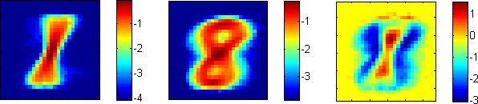
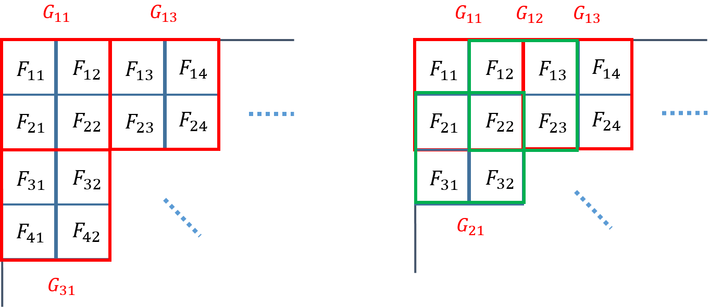

CS440 Fall 2015
Assignment 3: Naive Bayes Classification
The goal of this assignment is to implement a Naive Bayes classifier as described in this lecture and to apply it to the task of classifying visual patterns and text documents. As before, you can work in teams of up to three people (three-unit students with three-unit students, four-unit students with four-unit students).Contents
- Part 1: Digit classification
- Part 1.1 (for everybody): Single pixels as features
- Part 1.2 (for four-unit students): Pixel groups as features
- Report checklist
Part 1: Digit classification

(Adapted from Berkeley CS 188 project 5)
Data: This file is a zip archive containing training and test digits, together with their ground truth labels (see readme.txt in the zip archive for an explanation of the data format). There are 5000 training exemplars (roughly 500 per class) and 1000 test exemplars (roughly 100 per class).
Part 1.1 (for everybody): Single pixels as features
- Features: The basic feature set consists of a single binary indicator feature
for each pixel. Specifically, the feature Fij indicates the status of the (i,j)th
pixel. Its value is 1 if the pixel is foreground (no need to distinguish between the two different
foreground values), and 0 if it is background. The images are of size 28*28, so there are
784 features in total.
- Training: The goal of the training stage is to estimate the likelihoods
P(Fij | class) for every pixel location (i,j) and for every
digit class from 0 to 9. The likelihood estimate is defined as
P(Fij = f | class) = (# of times pixel (i,j) has value f in training examples from this class) / (Total # of training examples from this class).
In addition, as discussed in the lecture, you have to smooth the likelihoods to ensure that there are no zero counts. Laplace smoothing is a very simple method that increases the observation count of every value f by some constant k. This corresponds to adding k to the numerator above, and k*V to the denominator (where V is the number of possible values the feature can take on). The higher the value of k, the stronger the smoothing. Experiment with different integer values of k (say, from 1 to 50) and find the one that gives the highest classification accuracy.
You should also estimate the priors P(class) by the empirical frequencies of different classes in the training set. - Testing: You will perform maximum a posteriori (MAP) classification of test digits
according to the learned Naive Bayes model. Suppose a test image has feature values f1,1,
f1,2, ... , f28,28. According to this model, the posterior probability (up to scale)
of each class given the digit is given by
P(class) ⋅ P(f1,1 | class) ⋅ P(f1,2 | class) ⋅ ... ⋅ P(f28,28 | class).
Note that in order to avoid underflow, it is standard to work with the log of the above quantity:
log P(class) + log P(f1,1 | class) + log P(f1,2 | class) + ... + log P(f28,28 | class).
After you compute the above decision function values for all ten classes for every test image, you will use them for MAP classification. - Evaluation: Use the true class labels of the test images from the testlabels
file to check the correctness of the estimated label for each test digit. Report your performance in terms
of the classification rate for each digit (percentage of all test images of a given digit correctly
classified). Also report your confusion matrix. This is a 10x10 matrix whose entry in row r and column c
is the percentage of test images from class r that are classified as class c. In addition, for each digit class,
show the test examples from that class that have the highest and the lowest posterior probabilities
according to your classifier. You can think of these as the most and least "prototypical" instances of each digit class
(and the least "prototypical" one is probably misclassified).
Important: The ground truth labels of test images should be used only to evaluate classification accuracy. They should not be used in any way during the decision process.
Tip: You should be able to achieve at least 70% accuracy on the test set. One "warning sign" that you have a bug in your implementation is if some digit gets 100% or 0% classification accuracy (that is, your system either labels all the test images as the same class, or never wants to label any test images as some particular class). - Odds ratios: When using classifiers in real domains, it is important to be able to inspect
what they have learned. One way to inspect a naive Bayes model is to look at the most likely features for a given label.
Another tool for understanding the parameters is to look at odds ratios. For each pixel feature
Fij and pair of classes c1, c2, the odds ratio is defined as
odds(Fij=1, c1, c2) = P(Fij=1 | c1) / P(Fij=1 | c2).
This ratio will be greater than one for features which cause belief in c1 to increase over the belief in c2. The features that have the greatest impact on classification are those with both a high probability (because they appear often in the data) and a high odds ratio (because they strongly bias one label versus another).
Take four pairs of digits that have the highest confusion rates according to your confusion matrix, and for each pair, display the maps of feature likelihoods for both classes as well as the odds ratio for the two classes. For example, the figure below shows the log likelihood maps for 1 (left), 8 (center), and the log odds ratio for 1 over 8 (right):

If you cannot do a graphical display like the one above, you can display the maps in ASCII format using some coding scheme of your choice. For example, for the odds ratio map, you can use '+' to denote features with positive log odds, ' ' for features with log odds close to 1, and '-' for features with negative log odds.
Part 1.2 (for four-unit students): Pixel groups as features
Credit: Yanglei Song
Instead of each feature corresponding to a single pixel, we can form features from groups of adjacent pixels. We can view this as a relaxation of the Naive Bayes assumption that allows us to have a more accurate model of the dependencies between the individual random variables.
Specifically, consider a 2*2 square of pixels with top left coordinate i,j and define a feature Gi,j that corresponds to the ordered tuple of the four pixel values. For example, in the figure below, we have
G1,1 = (F1,1, F1,2, F2,1, F2,2).

(The exact ordering of the four pixel values is not important as long as it's consistent throughout your implementation.) Clearly, this feature can have 16 discrete values.
The 2*2 squares can be disjoint (left side of figure) or overlapping (right side of figure). In the case of disjoint squares, there are 14 * 14 = 196 features;
in the case of overlapping squares, there are 27 * 27 = 729 features.
We can generalize the above examples of 2*2 features to define features corresponding to n*m disjoint or overlapping pixel patches. An n*m feature will have 2n*m distinct values, and as many entries in the conditional probability table for each class. Laplace smoothing applies to these features analogously as to the single pixel features.
In this part, you should build Naive Bayes classifiers for feature sets of n*m disjoint/overlapping pixel patches and report the following:
- Test set accuracies for disjoint patches of size 2*2, 2*4, 4*2, 4*4.
- Test set accuracies for overlapping patches of size 2*2, 2*4, 4*2, 4*4, 2*3, 3*2, 3*3.
- Discussion of the trends you have observed for the different feature sets (including single pixels), in particular, why certain features work better than others for this task.
- Brief discussion of running time for training and testing for the different feature sets (which ones are faster and why, and how does the running time scale with feature set size).
Part 1 Extra Credit
- Experiment with yet more features to improve the accuracy of the Naive Bayes model. For example, instead of using binary pixel values, implement ternary features.
- Apply your Naive Bayes classifier with various features to this face data. It is in a similar format to that of the digit data, and contains training and test images and binary labels, where 0 corresponds to 'non-face' and 1 corresponds to 'face'. The images themselves are higher-resolution than the digit images, and each pixel value is either '#', corresponding to an edge being found at that location, or ' ', corresponding to a non-edge pixel.
Report Checklist
Part 1:
- For everybody:
- Briefly discuss your implementation, especially the choice of the smoothing constant.
- Report classification rate for each digit and confusion matrix.
- For each digit, show the test examples from that class that have the highest and lowest posterior probabilities according to your classifier.
- Take four pairs of digits that have the highest confusion rates, and for each pair, display feature likelihoods and odds ratio.
- For four-unit students:
- Report test set accuracies for disjoint patches of size 2*2, 2*4, 4*2, 4*4, and for overlapping patches of size 2*2, 2*4, 4*2, 4*4, 2*3, 3*2, 3*3.
- Discuss trends for the different feature sets.
- Discuss training and testing running time for different feature sets.
Extra credit:
- We reserve the right to give bonus points for any advanced exploration or especially challenging or creative solutions that you implement. Three-unit students always get extra credit for submitting solutions to four-unit problems. If you submit any work for bonus points, be sure it is clearly indicated in your report.